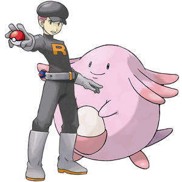
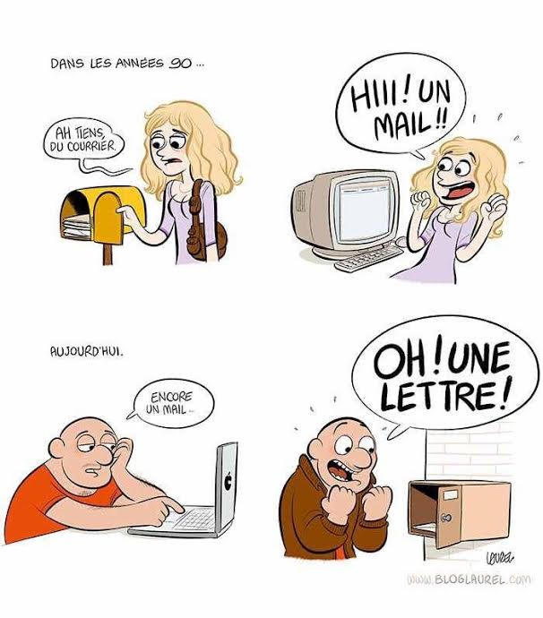

La Team Rocket a capturé Leveinard!
Pour sauver le pauvre Pokémon...
1. Take a look at the comic strip.

2. Now answer the questions in French as best you can. Feel free to look up a word or two if needed. You'll also probably want to work in the imparfait to describe how things "used to be."
[contact-form to="thoy@broward.edu"][contact-field label="Nom" type="name" required="1" /][contact-field label="Comment la femme réagit-elle? Et l'homme?" type="textarea" required="1" /][contact-field label="Pourquoi y a-t-il une différence entre leurs réactions?" type="textarea" required="1" /][contact-field label="Comment réagis-tu quand tu reçois un mél? Et une lettre ou une carte postale?" type="textarea" required="1" /][/contact-form]3. When you're finished, be sure to submit, then click here!